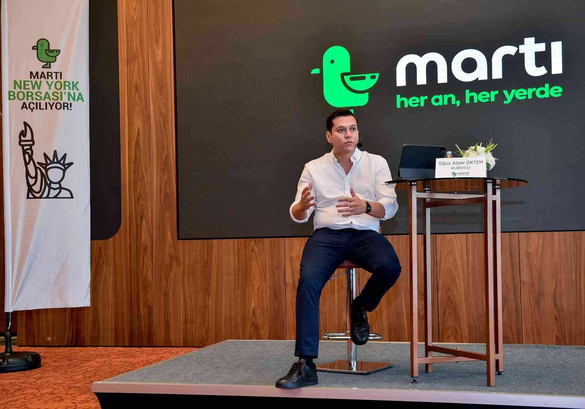

Oğuz Alper ÖKTEM
Kurucu Ortak & CEO
Vehbi Koç Vakfı Koç Özel Lisesi’nde tam burslu olarak okuyan Oğuz Alper Öktem, lisans eğitimini Chicago Üniversitesi Ekonomi Bölümü’nde, yüksek lisans eğitimini ise Londra Ekonomi Okulu Siyasal Ekonomi Bölümü’nde tamamladı. İş hayatına Deutsche Bank’ın Londra ofisinde nükleer enerji şirketleri üzerine çalışmalar yaparak başlayan Öktem, 2014 yılında İstanbul’a dönüş yaptı. Kariyerine BluTV şirketinde Chief Operating Officer olarak devam etti. 2018 yılında Martı İleri Teknoloji’yi kurdu.
2018 yılında kurulan Türkiye'nin öncü ve tek ölçeklenmiş mobilite şirketi Martı, e-scooter, e-mobilet ve e-mopedlerden oluşan filosuyla kendi IOT altyapısını ve yazılım sistemlerini üretiyor.
Türkiye'de iOS ve Android mağazalarında 1 numaralı ulaşım uygulaması olan Martı, büyüyen sadık müşteri tabanını güçlendirerek ve diğer cazip yan iş kollarına yayılarak Türkiye'nin ilk ulaşım süper uygulaması olmayı hedefliyor.